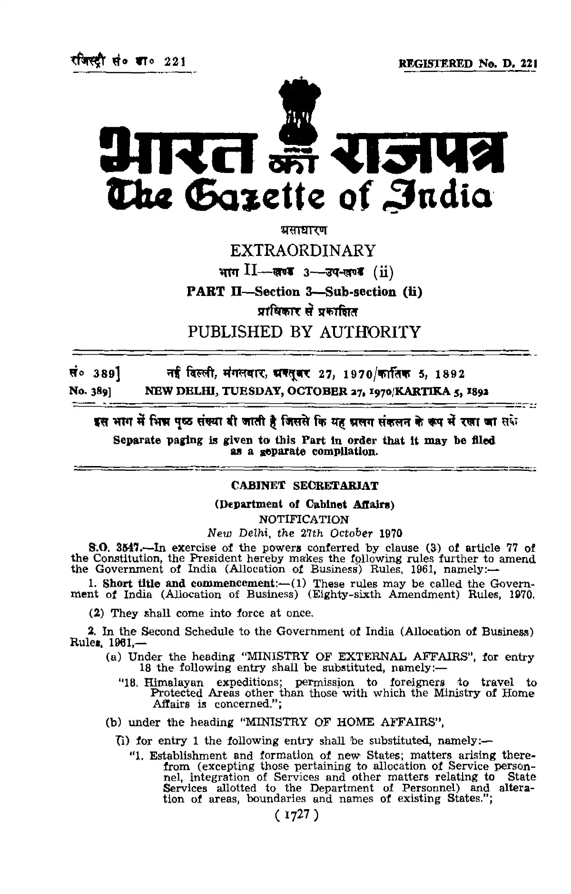
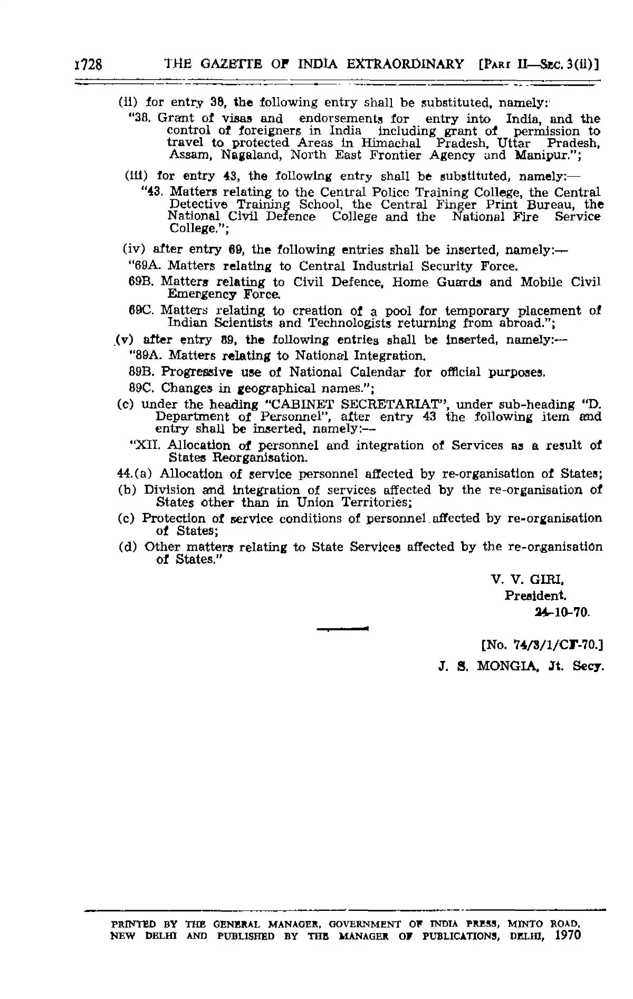

Amendment #86 (S.O. 3547, 1970)
7 changes: 0 to the First Schedule, 7 to the Second Schedule. 7 applied
The order, page by page
Page 1 of 2

12Schedule 2 › MINISTRY OF EXTERNAL AFFAIRS › entry 18
- 18. Himalayan expeditions; permission to foreigners to Protected Areas other than those with which the Ministry of Home Affairs is concerned.
applied at schedule 2 › ministry MINISTRY OF EXTERNAL AFFAIRS › entry 18 in the Rules after #86
Schedule 2 › MINISTRY OF HOME AFFAIRS › entry 1
- 1. Establishment and formation of new States; matters arising therefrom (excepting those pertaining to allocation of Service personnel, integration of Services and other matters relating to State Services allotted to the Department of Personnel ) and alteration of areas, boundaries and names of…
applied at schedule 2 › ministry MINISTRY OF HOME AFFAIRS › part I › group_heading The following subjects which are relatable to… in the Rules after #86
Page 2 of 2

34567Schedule 2 › MINISTRY OF HOME AFFAIRS › entry 38
- 38. Grant of visas and endorsements for entry into India, and the control of foreigners in India including grant of permission to travel to protected Areas in Himachal Pradesh, Uttar Pradesh Assam, Nagaland, North East Frontier Agency and Manipur.
applied at schedule 2 › ministry MINISTRY OF HOME AFFAIRS › part I › group_heading The following subjects which are relatable to… in the Rules after #86
Schedule 2 › MINISTRY OF HOME AFFAIRS › entry 43
- 43. Matters relating to the Central Police Training College, the Central Detective Training School, the Central Finger Print Bureau, the National Civil Defence College and the National Fire Service College.
applied at schedule 2 › ministry MINISTRY OF HOME AFFAIRS › part I › group_heading The following subjects which are relatable to… in the Rules after #86
after Schedule 2 › MINISTRY OF HOME AFFAIRS › entry 69
- 69A. Matters relating to Central Industrial Security Force.
- 69B. Matters relating to Civil Defence, Home Guards and Mobile Civil Emergency Force.
- 69C. Matters relating to creation of a pool for temporary placement of Indian Scientists and Technologists returning from abroad.
applied at schedule 2 › ministry MINISTRY OF HOME AFFAIRS › part I › group_heading The following subjects which are relatable to… in the Rules after #86
after Schedule 2 › MINISTRY OF HOME AFFAIRS › entry 89
- 89A. Matters relating to National Integration.
- 89B. Progressive use of National Calendar for official purposes.
- 89C. Changes in geographical names.
applied at schedule 2 › ministry MINISTRY OF HOME AFFAIRS › part I › group_heading The following subjects which are relatable to… in the Rules after #86
after Schedule 2 › CABINET SECRETARIAT › Department of Personnel › entry 43
- XII. Allocation of personnel and integration of Services as a result of States Reorganisation.
- 44.
- a. Allocation of service personnel affected by re-organisation of States
- b. Division and integration of services affected by the re-organisation of States other than in Union Territories
- c. Protection of service conditions of personnel affected by re-organisation of States
- d. Other matters relating to State Services affected by the re-organisation of States.
applied at schedule 2 › ministry CABINET SECRETARIAT › department D › group_heading XI › entry 43 in the Rules after #86
How this document was read
Edits to the reading
| Date | By | Edit | Before → after |
|---|---|---|---|
| 12 November 2026 | claude | word corrected |
From the Government of India (Allocation of Business) Rules, 1961 and their amendments, as published by the Cabinet Secretariat (cabsec.gov.in), read by orgpedia. The readings of the older scanned gazettes have known gaps.